View at 100 percent browser zoom. Drafts only. Islands and fliers are placeholders; the hazard strips are the accepted dither drafts.
Clear night, moon: v2 left, v3 right, 2x
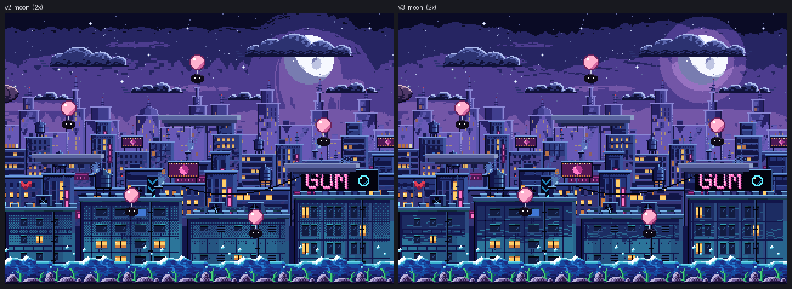
Storm, rain and search beams: v2 left, v3 right, 2x
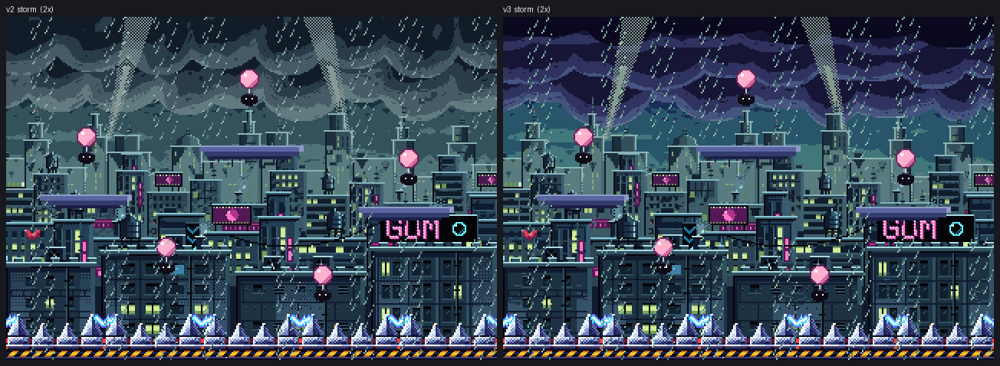
Ember dusk, low sun: v2 left, v3 right, 2x
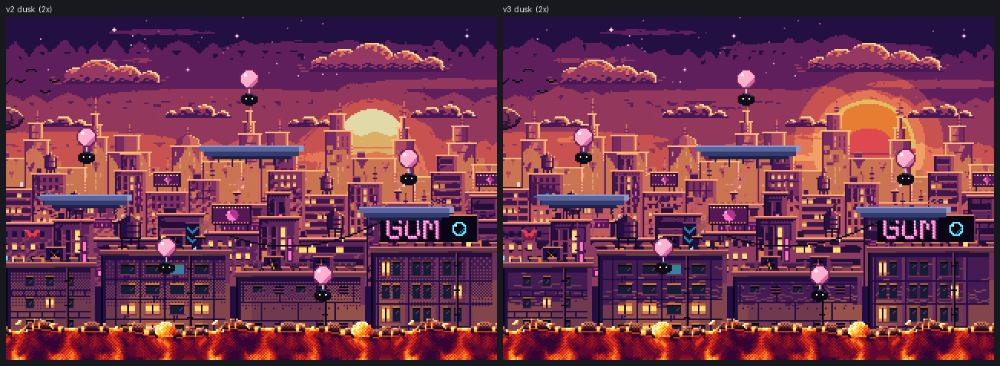
3x: sway, drift, tile loops and cast light. The drift is faster than in the game so that the loop closes.
Clear night, moon
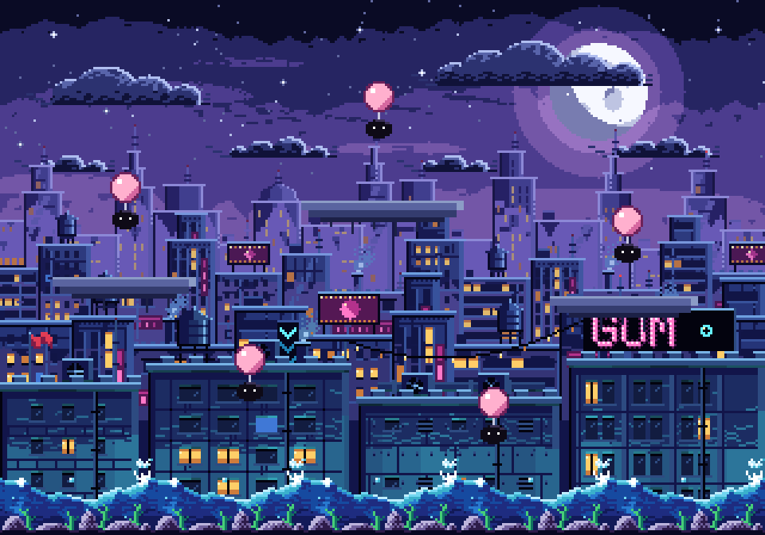
Storm, rain and search beams

Ember dusk, low sun
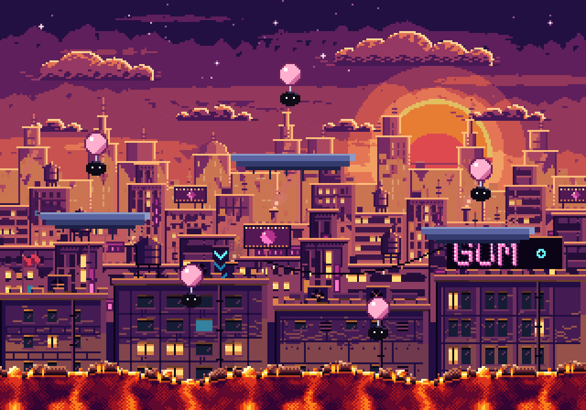
Clear night, moon, still at 3x
Clear night, moon, still at true size
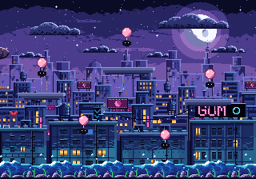
Storm, rain and search beams, still at 3x
Storm, rain and search beams, still at true size
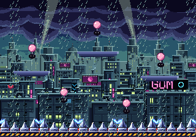
Ember dusk, low sun, still at 3x
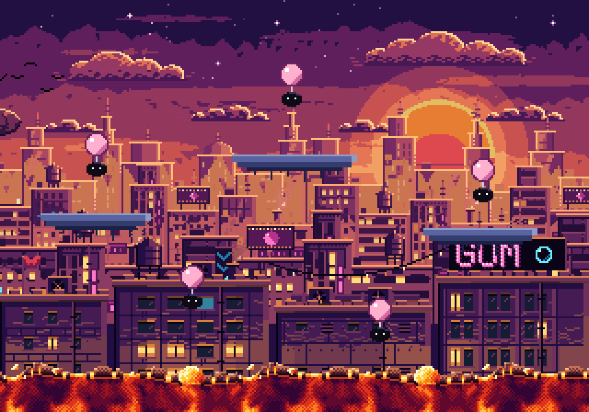
Ember dusk, low sun, still at true size
Clear night, moon: planes, each alone, at 2x
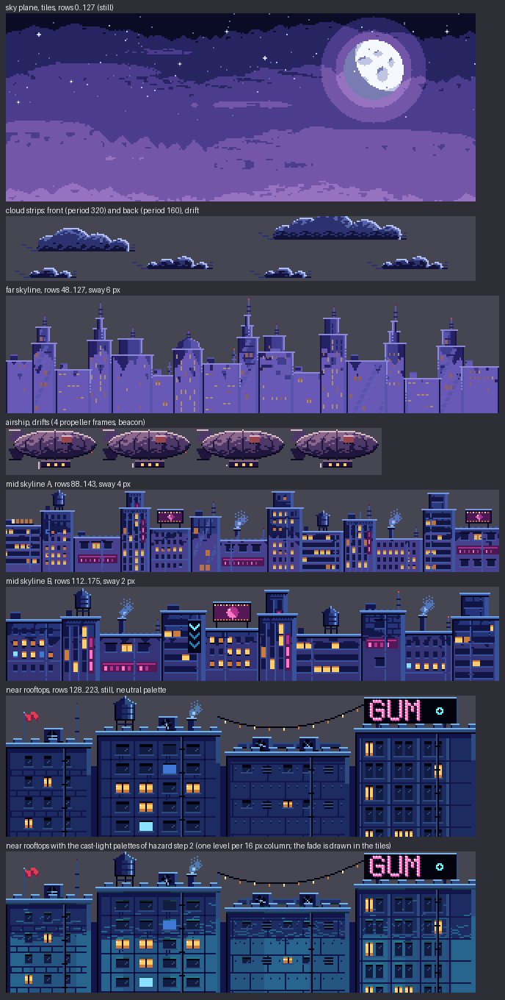
Storm, rain and search beams: planes, each alone, at 2x
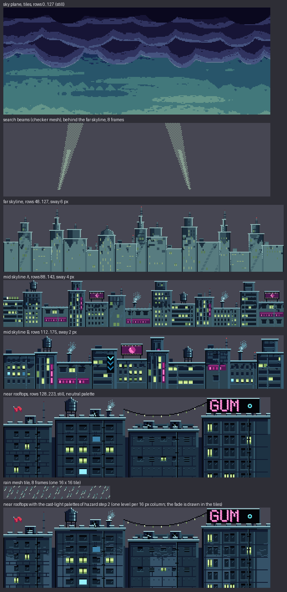
Ember dusk, low sun: planes, each alone, at 2x
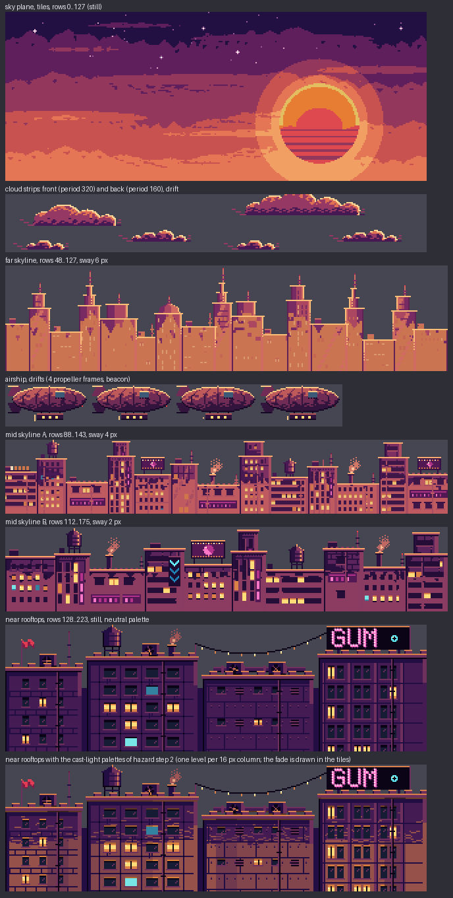